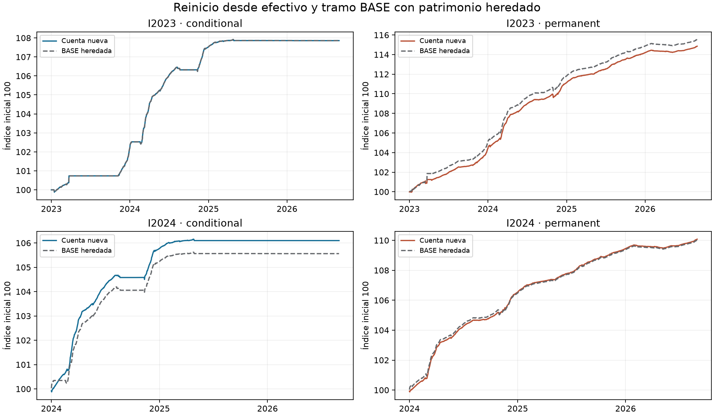
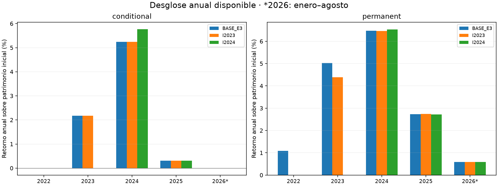
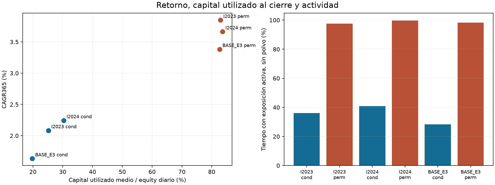
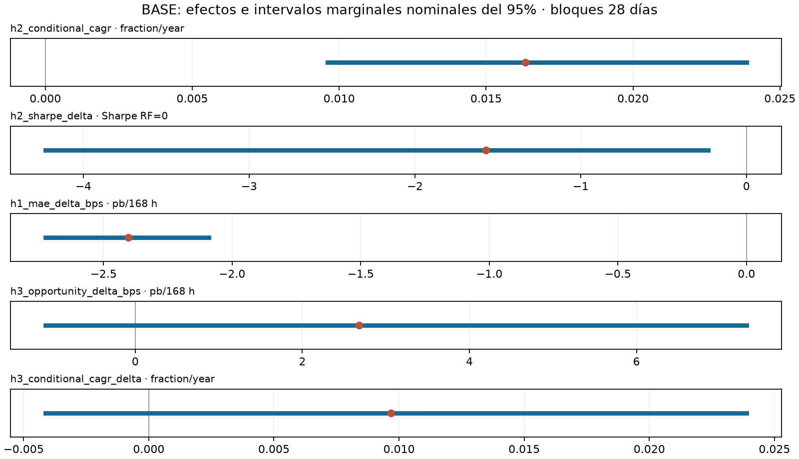

Se comparan cuatro cuentas nuevas desde 10.000 USDT, sin posiciones heredadas, con
los tramos coincidentes de BASE continua iniciada en 2022. Las cuentas continuas
conservan el patrimonio, el inventario, los ciclos y los costos acumulados reales.
El índice 100 facilita la lectura; no representa una nueva cartera ni vuelve
directamente comparables los P&L monetarios. Toda la historia ya fue examinada:
los inicios alternativos no son una validación fuera de muestra.
| Cuenta / tramo | Estrategia | Días | Denominador USDT | Retorno | CAGR365 | Sharpe RF=0 | DD diario | Capital/equity medio |
| I2023 | conditional | 1,339.00 | 10,000.00 | 7.86% | 2.08% | 5.65 | -0.21% | 25.21% |
| I2023 | permanent | 1,339.00 | 10,000.00 | 14.86% | 3.85% | 8.48 | -0.32% | 82.92% |
| I2024 | conditional | 974.00 | 10,000.00 | 6.10% | 2.24% | 6.82 | -0.17% | 30.31% |
| I2024 | permanent | 974.00 | 10,000.00 | 10.08% | 3.66% | 10.68 | -0.20% | 83.63% |
| BASE_E3 | conditional | 1,704.00 | 10,000.00 | 7.86% | 1.63% | 4.96 | -0.21% | 19.81% |
| BASE_CONTINUA_I2023 | conditional | 1,339.00 | 10,000.00 | 7.86% | 2.08% | 5.65 | -0.21% | 25.21% |
| BASE_CONTINUA_I2024 | conditional | 974.00 | 10,217.44 | 5.56% | 2.05% | 6.18 | -0.21% | 26.84% |
| BASE_E3 | permanent | 1,704.00 | 10,000.00 | 16.80% | 3.38% | 6.53 | -0.48% | 82.63% |
| BASE_CONTINUA_I2023 | permanent | 1,339.00 | 10,109.16 | 15.54% | 4.02% | 7.46 | -0.32% | 83.76% |
| BASE_CONTINUA_I2024 | permanent | 974.00 | 10,616.66 | 10.02% | 3.64% | 9.61 | -0.32% | 83.59% |
Las fechas observadas, nominales y solicitadas constan en métricas.
Se publican sólo años con evidencia; 2026 termina el 1 de septiembre exclusivo.
Los cortes originales incompletos llevan el sufijo `disponible`. La tabla de
saldos iniciales conserva efectivo, deuda, spot,
cortos, collateral y costos heredados. No se imputan filas cero anteriores al inicio.

El P&L concilia patrimonio final menos inicial con spot, futuros, funding, fees y
cargos de liquidación a 1E-8 USDT. El slippage es informativo y no se descuenta dos
veces. CAGR usa 365 días; Sharpe RF=0 usa retornos diarios, días inactivos y varianza
muestral (ddof=1). Sharpe sin volatilidad evaluable permanece ND.
El capital utilizado es valor spot más collateral al cierre diario; su media es
descriptiva y no mide el pico intradía. La exposición activa excluye polvo y conserva
por separado el inventario bruto y su riesgo de precio.


| Cuenta / tramo | H2 muestra disponible | CAGR condicional | Diferencia de Sharpe | Criterio |
| BASE_CONTINUA_I2023 | no_favorable | 2.08% | -1.81 | sharpe_not_superior |
| BASE_CONTINUA_I2024 | no_favorable | 2.05% | -3.43 | sharpe_not_superior |
| BASE_E3 | no_favorable | 1.63% | -1.57 | sharpe_not_superior |
| I2023 | no_favorable | 2.08% | -2.83 | sharpe_not_superior |
| I2024 | no_favorable | 2.24% | -3.86 | sharpe_not_superior |
H2 compara estrategias con el mismo inicio y período: requiere CAGR condicional
positivo y Sharpe superior. La tabla completa H2 conserva todos los
cortes y años, incluidos los favorables y no evaluables. H3 original permanece en
BASE continua: I2023/I2024 carecen de parte o todo el régimen 2022–2023 y son ND
para ese contraste. Ver cobertura H3 y
El bootstrap utiliza exclusivamente BASE autenticada; los inicios y escenarios
hipotéticos no se agregan como observaciones. Bloques circulares emparejados de 28
días, sensibilidades 14/56, estratos anuales y segmentos contiguos; 5.000 réplicas por
longitud, PCG64/SeedSequence raíz 20261001 e intervalos percentiles marginales
nominales del 95%, cuantiles lineales. Son decisiones del estudio. La circularidad
no es contigüidad histórica; estratificar supone estabilidad aproximada dentro del
estrato y corta dependencia entre años. La selección histórica, los pocos ciclos y
los días inactivos limitan la inferencia. Dos intervalos marginales al 95% no son un
contraste conjunto al 95%; las frecuencias no son probabilidades de verdad ni de
ganancia futura. Menos del 95% de réplicas válidas deja el intervalo principal ND;
los cuantiles finitos se identifican como condicionales a evaluabilidad.
Ver efectos, intervalos y degeneración,
protocolo y cobertura estadística y síntesis.
Las excepciones favorables H336, A100, L01 y contrafactuales deben conservarse por
período. El diagnóstico de logs y estados B2/B3 registra {'rama_no_activada': 28}. Corridas pendientes o afectadas: ninguna según la cobertura documentada. Su criterio y cobertura constan en la síntesis; no se ejecutaron replays históricos. SOFR es una comparación hipotética bruta;
no es una cuenta realizada comparable en riesgo. El drawdown de este informe es
diario: riesgo intradía global y ventanas locales permanecen separados en sus fuentes.
Conciliaciones, componentes por activo,
La evidencia financiera contiene bytes originales comprimidos sin pérdida y
manifiestos de seis carteras únicas; los dos tramos de cada BASE son vistas de la
misma cuenta. Las ventanas mínimas de ejecución conservan identidad de partición,
volumen y precio. El verificador recalcula contabilidad, funding, fees, posiciones,
actividad, exposición, métricas y H2 desde esos insumos; comparte helpers auditados
con el constructor. No relee particiones masivas ni ejecuta el motor offline.
Mecanismo estadístico: CircularBlockBootstrap,
La documentación respalda el mecanismo, no los parámetros ni la estratificación elegidos.
